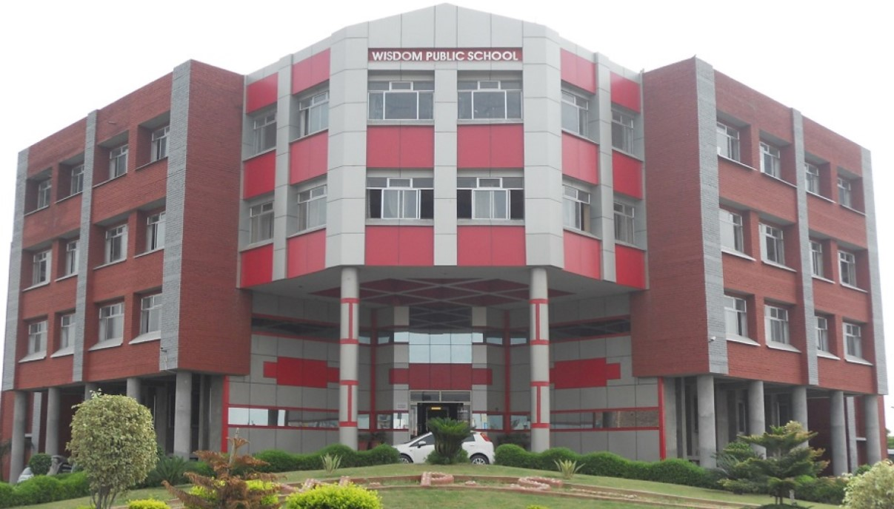

Vision Statement
- “Wisdom Public School will be a model educational system within which learners may develop to their fullest potential and become a generation of leaders and individuals who are highly motivated to be successful in all their future endeavors.”
Mission Statement
- “Wisdom Public School’s mission is to graduate practicing leaders and responsible citizens who are well prepared for college entrance and career challenges of the twenty-first century.”
- Our mission will be achieved through educational excellence within a healthy learning environment and strong collaboration with positive interaction among school, students, parents, and community.
President's Message
We at Wisdom Public School encourage our children to take intellectual risks in an atmosphere that is both challenging and supportive. Our Wisdom students are problem solvers. They learn to evaluate what they hear, read and see, in doing so they take control of the foundation of their learning, become self-confident, competent and ready to lead.
The world of classroom and methods of teaching have undergone both visible and invisible changes,while the structure of school with textbooks and timetables may have remained untouched. The process of learning is evolving and hence we are forced to adapt new technology and modern technical knowhow, even to educate young kids of Kindergarten. Even in terms of discipline we need a shift from authoritative environment to democratic and collaboration.
We in our institution strive hard to achieve our goal of producing self thinking intellectuals with good character and noble heart along with the religious bent of mind.
I take this opportunity to extend my heartfelt thanks to our beloved Principal, Headmistress, teaching and non teaching staff for their continuous professionalism, excellence and dedication.
May God bless all our Trust members to keep unity and maintain solidarity.
Secretary's Message
Dear brothers and sisters,
May peace and blessings of Almighty shower on every one of you. Indeed it’s not just another school but a dream school. We a group of likeminded brothers who felt a vacuum in the society for a CBSE curriculum based institution inculcating a value based, interactive education with modern infrastructure and with students not just memorizing everything but learn with reasoning.
Our students and teachers have shown their presence in every event they compete. By the grace of Almighty mould our children into wonderful human beings through whom our society will benefit. And every Wisdom product will have a brand value in the society.
Principal's Message
A child’s life is like a piece of paper on which every person leaves a mark.
We also aspire to endorse in this as we comprehend that children must be taught how to think and not what to think. So we have introduced an interactive and playful learning method which propels the children to be more enthusiastic about it.
We staunchly rely on, education is not the filling of a pail, but the lighting of a fire. To stick to this axiom, we attempt to educate through a collaborative and participatory approach which addresses the learning needs of today to awaken children to learn by providing multiple stimuli.
CBSE brings innovations in teaching – learning methodologies by devising students’ friendly and students’ centred paradigms. For this we train our teachers to open the minds of children and to touch their hearts.
Co-Curricular and Extra-Curricular activities enable children to make a horizon for systematic and meaningful learning opportunities and strengthen the bond of friendship. We have designed many activities where the children gain skills to create solutions to difficult social problems.
We thank and invite parents to invest in their children’s knowledge which is going to recompense the supremacy power in them.